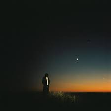
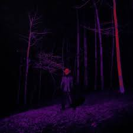
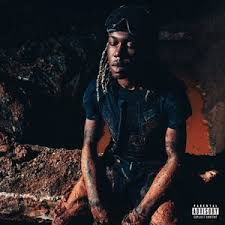

Destroy Lonely— американский рэпер из Атланты, получивший широкую известность благодаря своему стильному экспериментальному звучанию и микстейпу No Stylist. Являясь артистом лейбла Opium, он выделяется эмоциональной подачей и тесным сотрудничеством с Ken Carson.

Broken Hearts 2— это делюкс-версия дебютного альбома американского рэпера Destroy Lonely, выпущенная 31 октября 2020 года. Релиз расширяет оригинальную работу шестью новыми треками, погружая слушателя в атмосферу меланхоличного «broken heart» звучания.

«NOSTYLIST» от Destroy Lonely — это гимн уверенности и уникального стиля, где артист подчеркивает свою независимость в выборе одежды и образа, добиваясь успеха без посторонней помощи. Трек отличается мрачным, атмосферным звучанием и драйвовой подачей, ставя акцент на роскошной жизни, моде и популярности исполнителя.

«If Looks Could Kill» — это популярный трек и одноименный альбом американского рэпера [Destroy Lonely], вышедший в 2023 году. Композиция сочетает мрачную атмосферу, темы «модного демона»

«LOVE LASTS FOREVER» — это масштабный альбом 2024 года от Destroy Lonely, демонстрирующий его эволюцию от протеже Playboi Carti до самостоятельного творца
Listen